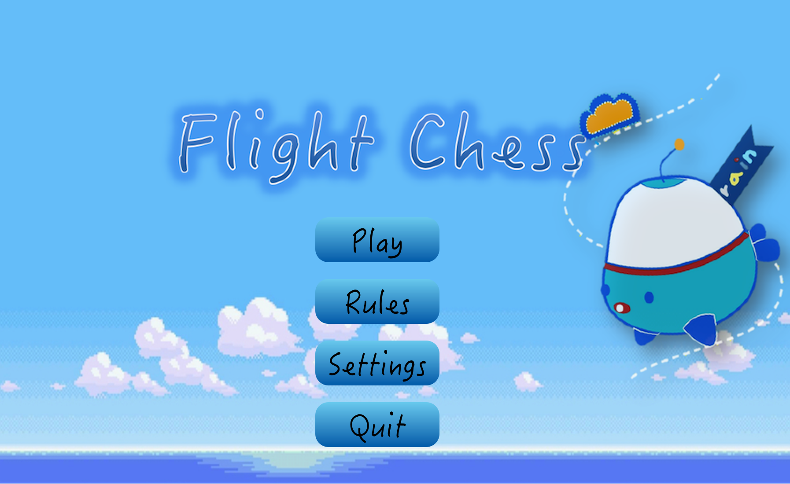
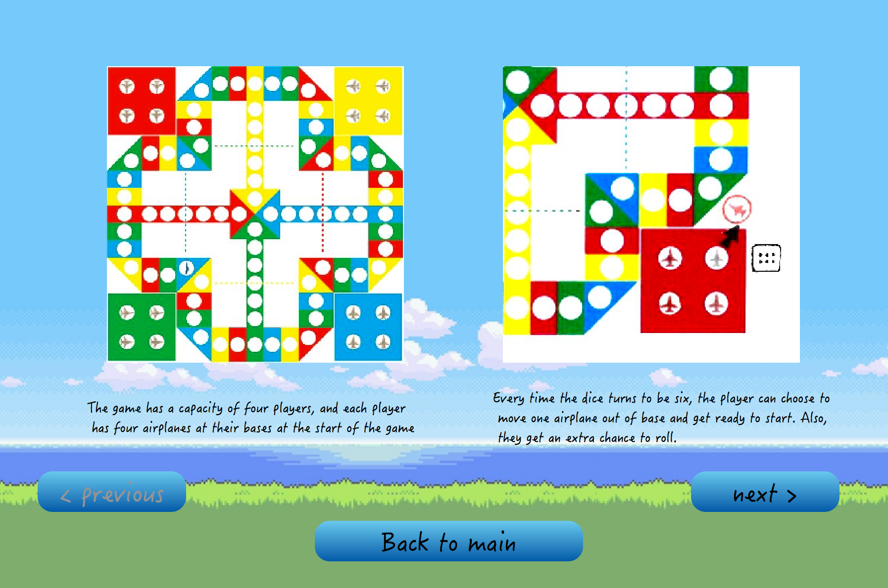
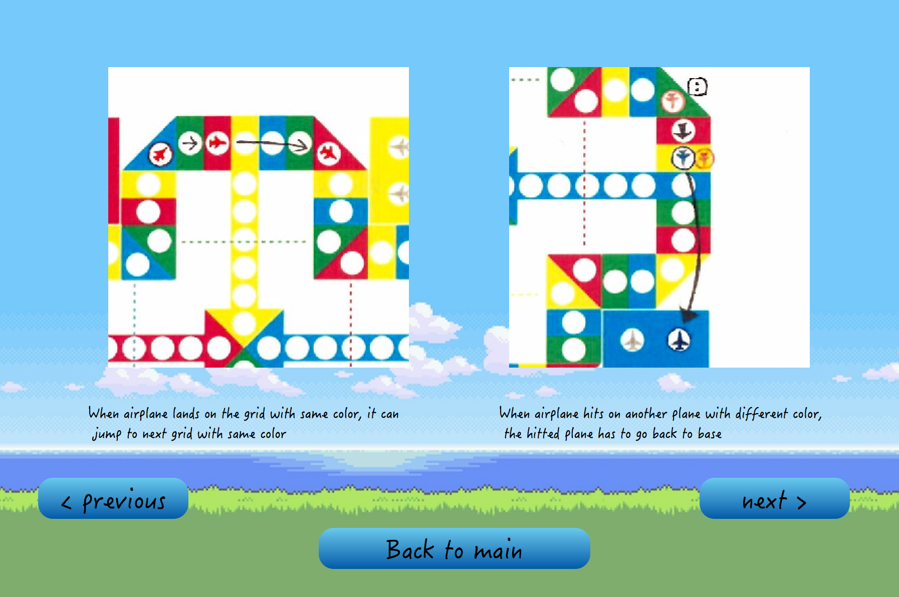
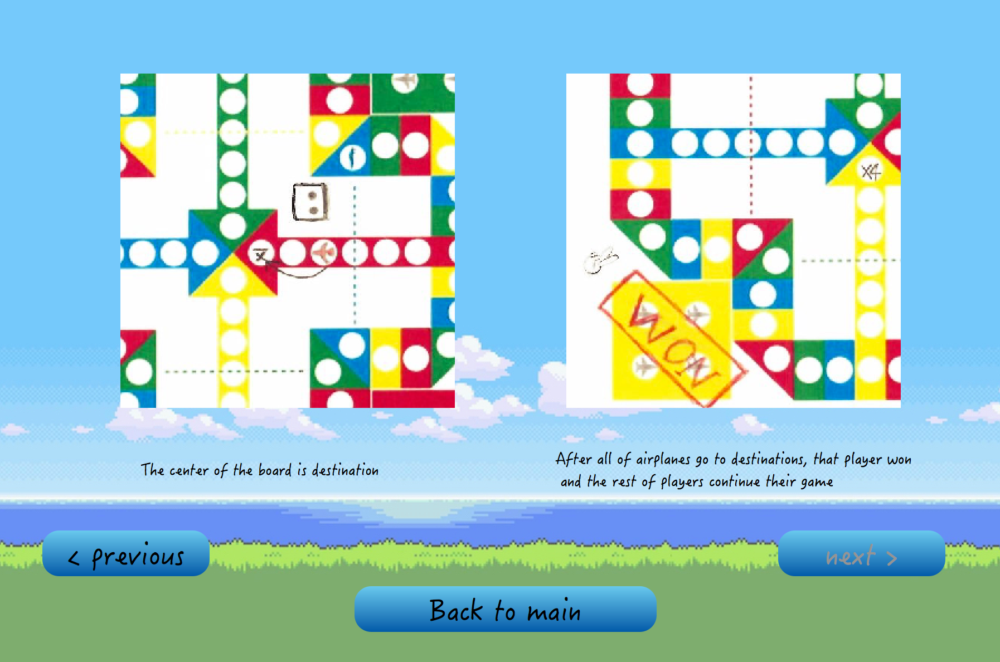
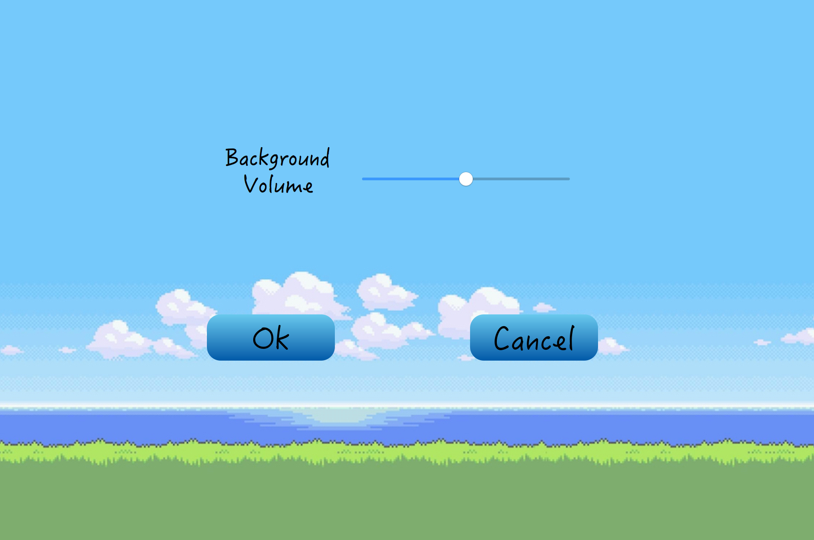
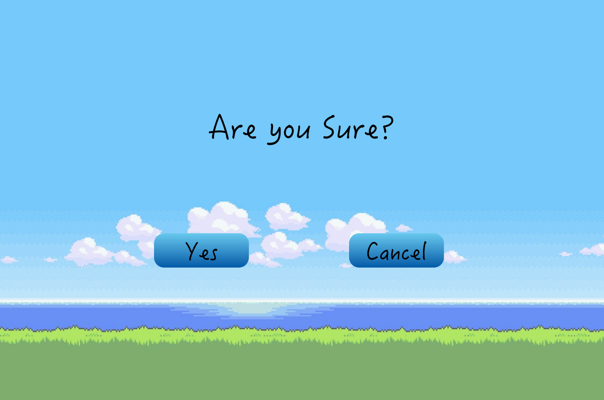
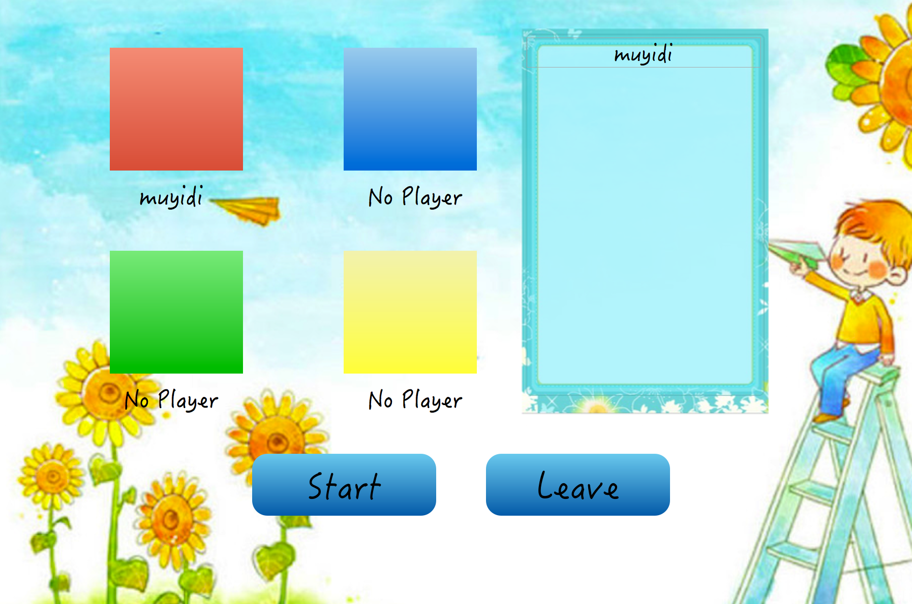
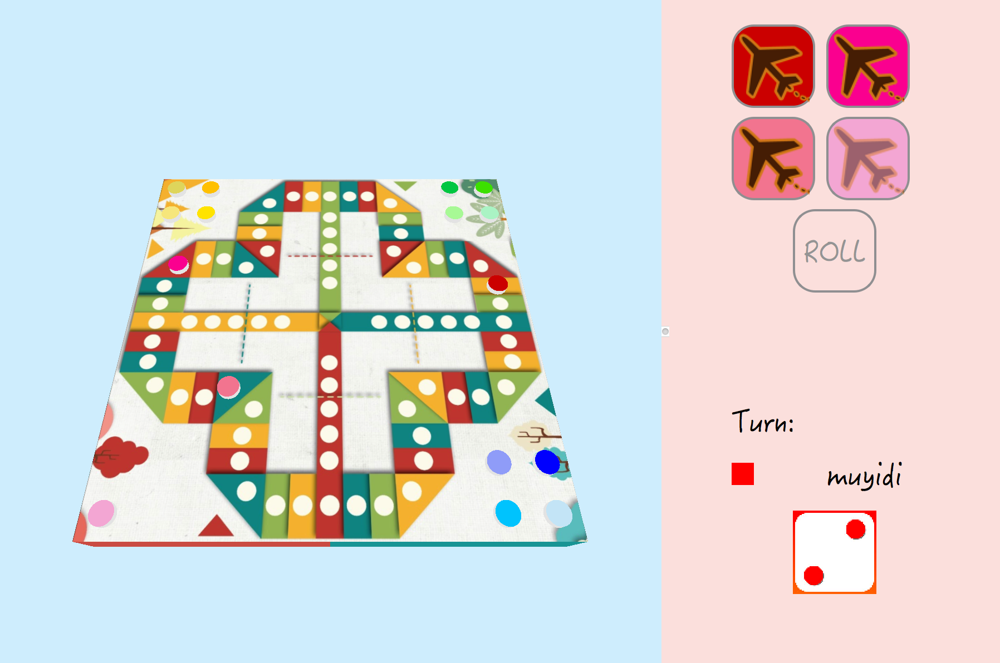
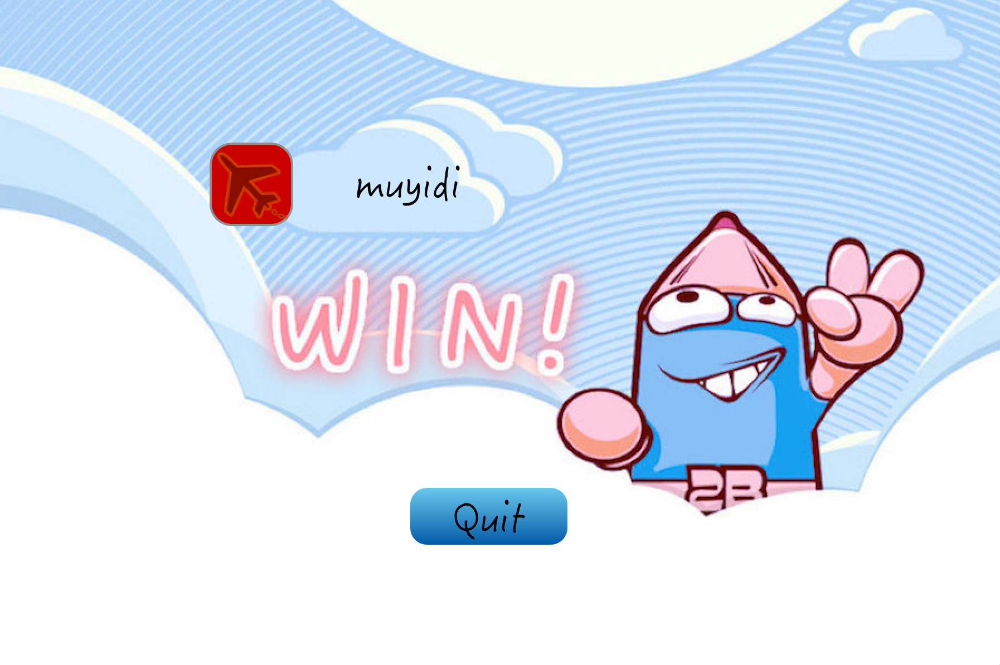

Created by: Chuanshun Xia, Xianzhi Ruan, Yidi Mu, Yihan Li
Flight Chess is a Chinese cross-and-circle board game. It is similar to the western game of Ludo and the Indian game of Pachisi. Developed in the 20th century.
An aeroplane chess game board features 4 homes in each corner. There is a track of 52 spaces circumventing the board and 4 starting bases, each leading from the track to the terminal at the centre of the board. The board is evenly divides between 4 colours. There are also 4 sets of 4 coloured airplane pieces. The colours used are red, yellow, green and blue.
For our EECS 493 User Interface Development final project, we decided to
recreate the classic Flight Chess game.
When the game is first started, the user is shown the main menu (figure 1).
The main menu has three options: "Play the Classic Level," "Create a Level,"
and "Load a Saved Level".

Figure 1: The main menu screen
One to four players each try to get all their own plane pieces from their hangars, located at the corners of the board, into the base of their own color in the center of the board. Each player takes a turn by rolling the dice. On a turn a player may do the following:
Taxi a piece out of the home onto the starting base. This can only be done by rolling a 6.
Move a piece that's on the starting base to the board, or move a piece on the board clockwise around the track, the number of steps indicated by the dice.
Additional rules are:
A roll of 6 gives that player another roll.
When a player lands on an opponent's piece, the opponent returns that piece to its home.
When a plane lands on a space of its own color, it immediately jumps to the next space of its own color. Any opposing planes sitting on that square are sent back to their home.
When a plane lands on the shortcut of its own color, it may take the shortcut, and any opposing planes in the end of the shortcut are sent back to their home. This may also by done in succession with a jump leading to shortcut.
Plane must fly into the terminal on an exact roll. If a player cannot move pieces into the center base by an exact roll of the die, then they must move their piece backwards according to number rolled.
When a plane gets to the terminal, it is placed facedown back in its own hangar, indicating that it is done for the game. The first player to get all of four of their planes to the center of the board wins.

Figure 2: The rules (1)

Figure 3: The rules (2)

Figure 4: The rules (3)

Figure 5: The setting screen

Figure 6: The quit screen

Figure 7: The waiting room screen

Figure 8: The red player screen

Figure 9: The yellow player screen

Figure 10: The green player screen

Figure 11: The blue player screen

Figure 12: The bystander screen

Figure 13: The bystander screen

Figure 14: The ending screen
{kind=link}
{kind=link}
{kind=link}
{kind=link}
{kind=link}
{kind=link}
{kind=link}
{kind=link}
{kind=link}